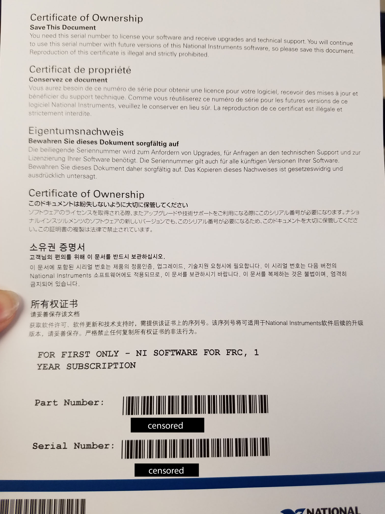

Installing the FRC Update Suite
The FRC Update Suite is a collection of necessary pieces of software provided by FIRST Robotics. Part of it is only needed for LabView programming, but other parts are needed for robot programming in all languages. Most importantly, it includes your FRC Driver Station, the application that allows you to control the robot from a laptop or other computer.
Before installing the software, make sure to look through the kit of parts you just received for a flier that contains a serial number for the National Instruments software. It usually looks something like this:
Pro tip: MAKE SURE TO TAKE A PICTURE. It took me until my senior year to realize that leaving the flyer on one of the dusty tables in the back room doesn't make it very easy to find 6 months later when we need to reinstall the update suite on one of the computers. Learn to increase productivity sooner rather than later.
Installing the suite isn't too hard, it's just like installing any other bit of software. Your best bet is to follow the step by step instructions in WPI Screen Steps, because it gives detailed instructions WITH PICTURES. It is basically your best friend when it comes to setting up your environment; there are just a few things to look out for while completing the installation.
Serial Number
As mentioned previously, the installer will require a serial number from National Instruments that comes with the kit of parts. In case you missed it before, it is a giant gray tote that either you or your teammates lugged back from some far away land. The flier will be in a separate folder in the kit. Look for National Instruments (NI), the company that created the roboRIO and the LabView software.
National Instruments Account
In order to register the software, the installer will also require a login to a National Instruments Account. One can be easily created on their website, and it is best that the same account is used each time you install on a team computer, just for simplicity.
Team 2035 Tip: There is an NI account that has been created for Team 2035 using the team email: rockinbots2035@gmail.com. The account information will be provided for you guys. If it is lost, contact me.